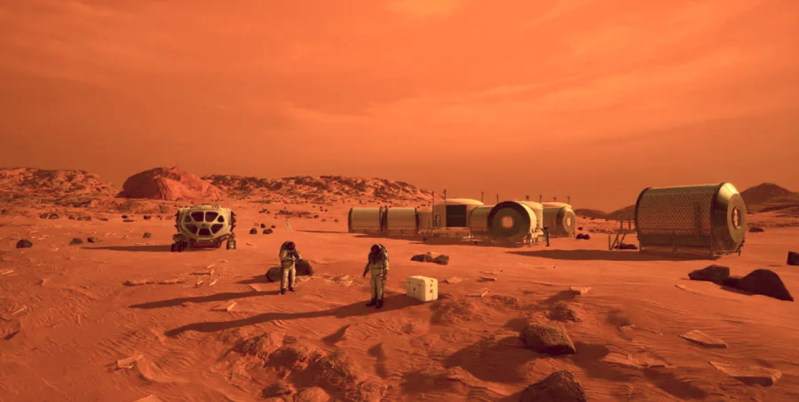
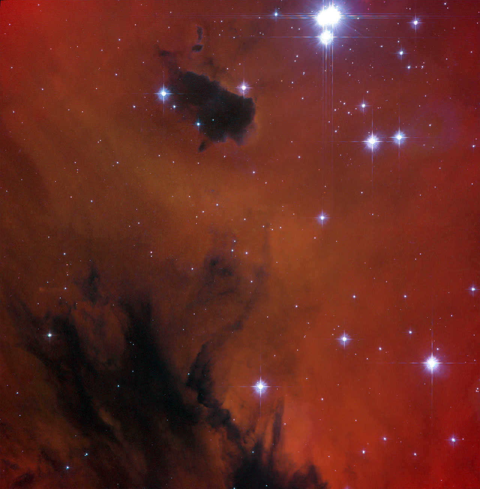

Mars: The Red Planet
It's not longer a question about if we reach Mars
But
rather when we'll call it home
FEATURED VIDEO
Mars Overview
At an average distance of 140 million miles, Mars is one of Earth's closest habitable neighbors. Gravity on Mars is about 38% of that of Earth, so you would be able to lift heavy things and bound around.
FROM ROBOTS TO HUMANS
Mars Exploration
A sophisticated international fleet of robotic orbiters, landers, and rovers have provided a continuous stream of scientific data—mapping the terrain, analyzing soil and rock samples, studying the climate, and even searching for signs of ancient life. The knowledge and technologies developed through these missions—such as precision landing systems, autonomous navigation, life-support modeling, and advancements in in-situ resource utilization—are laying the groundwork for human exploration.

IMAGE OF THE DAY
Gallery
This striking image captures a region of space rich in red hues and cosmic dust — a visual echo of Mars’ iron-laden surface and thin, hazy atmosphere.
